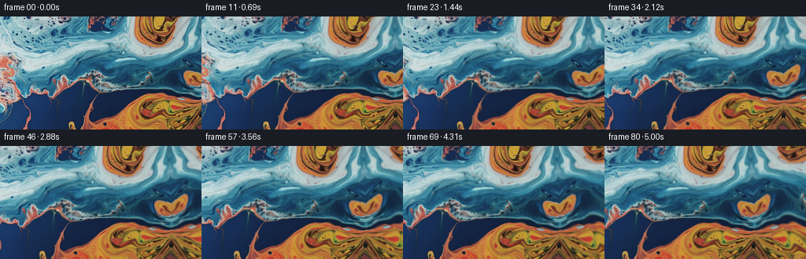
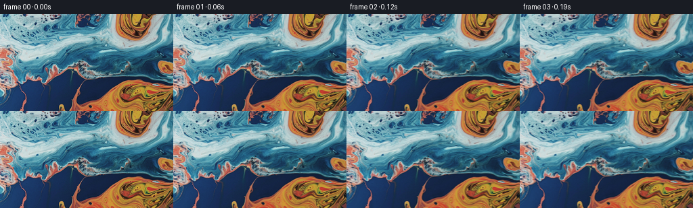

候选 01 · 2026-11-09T00:55:10.711013+00:00 · 点开播放与检查图
inspection.png

transition_check.png

代码变化
--- 上一保存版本
+++ 本次保存版本
@@ -0,0 +1,70 @@
+from pathlib import Path
+import numpy as np
+from PIL import Image
+from artifact_io import save
+
+ROOT = Path(__file__).resolve().parent
+
+def sample(image, x, y):
+ h,w=image.shape[:2]
+ x=np.clip(x,0,w-1.00001)
+ y=np.clip(y,0,h-1.00001)
+ xi=np.floor(x).astype(np.int32); yi=np.floor(y).astype(np.int32)
+ fx=(x-xi)[...,None]; fy=(y-yi)[...,None]
+ return ((1-fy)*((1-fx)*image[yi,xi]+fx*image[yi,xi+1])+
+ fy*((1-fx)*image[yi+1,xi]+fx*image[yi+1,xi+1]))
+
+def make_canvas(image):
+ # Continue the existing fluid through the edge. The continuation is bent
+ # tangentially and progressively rescaled, preserving the tiny pigment veins.
+ h,w=image.shape[:2]
+ yy,xx=np.mgrid[:h,:420].astype(np.float32)
+ u=np.maximum(xx-(w-1),0)
+ a=1-np.exp(-u/28)
+ sx=(w-1)-u*(0.91+0.13*np.sin(yy/41+0.35))
+ sy=yy + a*(15*np.sin(yy/38+u/54)+5*np.sin(u/29))
+ # Reflect vertically only outside the photograph, not with a clamped strip.
+ sy=np.abs((sy+h-1)%(2*(h-1))-(h-1))
+ extension=sample(image,sx,sy)
+ extension[:,:w]=image
+ return extension
+
+def fluid_map(x,y,t):
+ # A weak, smooth, incompressible flow adds real liquid motion, while the
+ # horizontal camera translation remains the dominant visible motion.
+ dx=np.zeros_like(x); dy=np.zeros_like(y)
+ for cx,cy,radius,rate in [(201,17,53,0.011),(211,137,68,-0.012),
+ (107,61,80,0.009),(288,94,72,0.008)]:
+ rx=x-cx; ry=y-cy
+ weight=np.exp(-(rx*rx+ry*ry)/(radius*radius))
+ angle=t*rate*weight
+ co=np.cos(angle); si=np.sin(angle)
+ dx += (co-1)*rx-si*ry
+ dy += si*rx+(co-1)*ry
+ # Long, very gentle shear along the blue/orange boundary.
+ dx += 0.40*t*np.sin(y/33+x/115)
+ dy += 0.18*t*np.sin(x/49+y/84)
+ return x+dx,y+dy
+
+def main():
+ image=np.array(Image.open(ROOT/'first_frame.png').convert('RGB'))
+ canvas=make_canvas(image.astype(np.float32))
+ Image.fromarray(np.clip(canvas,0,255).astype(np.uint8)).save(ROOT/'canvas.png')
+ yy,xx=np.mgrid[:144,:256].astype(np.float32)
+ frames=np.empty((81,144,256,3),dtype=np.uint8)
+ frames[0]=image
+ for i in range(1,81):
+ t=i/16
+ # Steady tripod pan to the right: material moves to the left.
+ pan=13.6*t
+ x=xx+pan
+ y=yy+0.35*np.sin(t*0.55)
+ x,y=fluid_map(x,y,t)
+ # A reflected two-pixel overscan preserves the edge under fluid drift.
+ y=np.abs((y+143)%286-143)
+ rgb=sample(canvas,x,y)
+ frames[i]=np.clip(np.rint(rgb),0,255).astype(np.uint8)
+ save(frames,ROOT)
+
+if __name__=='__main__':
+ main()
命令 3 · 2026-11-09T00:55:06.789349+00:00/bin/bash -lc "cat > generate.py <<'PY'
from pathlib import Path
import numpy as np
from PIL import Image
from artifact_io import save
ROOT = Path(__file__).resolve().parent
def sample(image, x, y):
h,w=image.shape[:2]
x=np.clip(x,0,w-1.00001)
y=np.clip(y,0,h-1.00001)
xi=np.floor(x).astype(np.int32); yi=np.floor(y).astype(np.int32)
fx=(x-xi)[...,None]; fy=(y-yi)[...,None]
return ((1-fy)*((1-fx)*image[yi,xi]+fx*image[yi,xi+1])+
fy*((1-fx)*image[yi+1,xi]+fx*image[yi+1,xi+1]))
def make_canvas(image):
# Continue the existing fluid through the edge. The continuation is bent
# tangentially and progressively rescaled, preserving the tiny pigment veins.
h,w=image.shape[:2]
yy,xx=np.mgrid[:h,:420].astype(np.float32)
u=np.maximum(xx-(w-1),0)
a=1-np.exp(-u/28)
sx=(w-1)-u*(0.91+0.13*np.sin(yy/41+0.35))
sy=yy + a*(15*np.sin(yy/38+u/54)+5*np.sin(u/29))
# Reflect vertically only outside the photograph, not with a clamped strip.
sy=np.abs((sy+h-1)%(2*(h-1))-(h-1))
extension=sample(image,sx,sy)
extension[:,:w]=image
return extension
def fluid_map(x,y,t):
# A weak, smooth, incompressible flow adds real liquid motion, while the
# horizontal camera translation remains the dominant visible motion.
dx=np.zeros_like(x); dy=np.zeros_like(y)
for cx,cy,radius,rate in [(201,17,53,0.011),(211,137,68,-0.012),
(107,61,80,0.009),(288,94,72,0.008)]:
rx=x-cx; ry=y-cy
weight=np.exp(-(rx*rx+ry*ry)/(radius*radius))
angle=t*rate*weight
co=np.cos(angle); si=np.sin(angle)
dx += (co-1)*rx-si*ry
dy += si*rx+(co-1)*ry
# Long, very gentle shear along the blue/orange boundary.
dx += 0.40*t*np.sin(y/33+x/115)
dy += 0.18*t*np.sin(x/49+y/84)
return x+dx,y+dy
def main():
image=np.array(Image.open(ROOT/'first_frame.png').convert('RGB'))
canvas=make_canvas(image.astype(np.float32))
Image.fromarray(np.clip(canvas,0,255).astype(np.uint8)).save(ROOT/'canvas.png')
yy,xx=np.mgrid[:144,:256].astype(np.float32)
frames=np.empty((81,144,256,3),dtype=np.uint8)
frames[0]=image
for i in range(1,81):
t=i/16
# Steady tripod pan to the right: material moves to the left.
pan=13.6*t
x=xx+pan
y=yy+0.35*np.sin(t*0.55)
x,y=fluid_map(x,y,t)
# A reflected two-pixel overscan preserves the edge under fluid drift.
y=np.abs((y+143)%286-143)
rgb=sample(canvas,x,y)
frames[i]=np.clip(np.rint(rgb),0,255).astype(np.uint8)
save(frames,ROOT)
if __name__=='__main__':
main()
PY
python generate.py"exit 0 命令 4 · 2026-11-09T00:55:34.124205+00:00/bin/bash -lc "python - <<'PY'
from PIL import Image
import numpy as np
from pathlib import Path
p=Path('.')
a=np.array(Image.open(p/'first_frame.png').convert('RGB'))
b=np.array(Image.open(p/'frames/00.png').convert('RGB'))
f=list((p/'frames').glob('*.png'))
z=np.load('pixels.npz')['pixels']
print('frame 00 pixel-identical:', np.array_equal(a,b))
print('frames:',len(f),'size:',b.shape,'packed tensor:',z.shape)
PY"exit 0